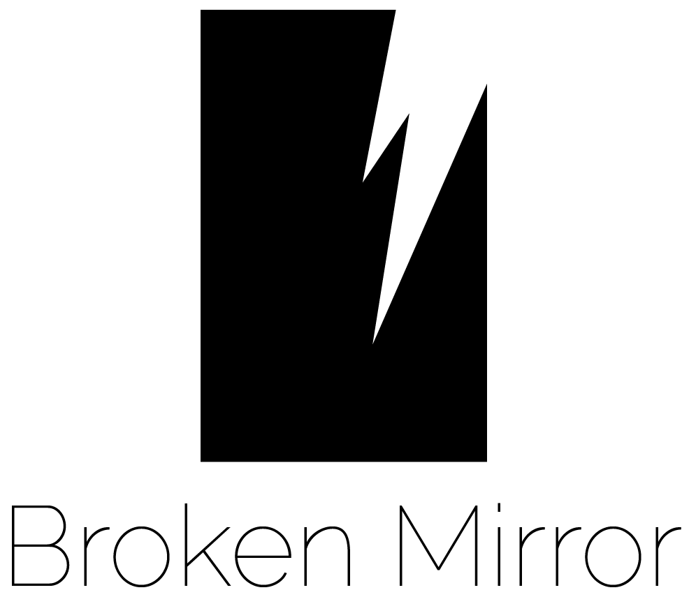
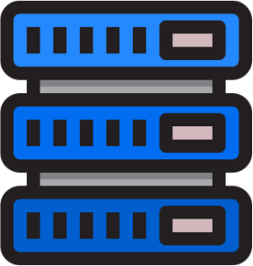
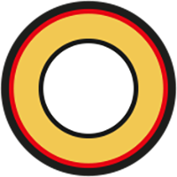

A propos
Qui suis-je ?
Je m’appelle Zoé Louyot, et je suis étudiante en première année de DUT MMI (Métiers du Multimédia et de l’Internet) à l’IUT Belfort-Montbéliard. J’ai créé ce site web dans le cadre d’un projet universitaire, dont le thème est « Dark side of the web », ici le côté obscur concerne la pollution numérique. J’ai choisi de m’appuyer sur le film « Snowden », dans lequel l’utilisation d’Internet et du numérique est très présente.
Les données que nous mettons et enregistrons en ligne consomment énormément d'énergie. Cela contribue évidemment à la pollution et au réchauffement climatique. Il est temps pour nous tous de prendre conscience de cela. Nous devons faire ce qui est possible pour réduire cette pollution, et sauver notre planète avant qu’il ne soit trop tard. Je vous présente sur ce site quelques astuces simples pour réduire votre impact écologique lié au numérique, et bien sûr pour protéger votre vie privée. Agissons pour notre planète.
Autres projets
Ce site a été créé dans le cadre d'un exercice pédagogique. Le but était de présenter les aspects négatifs d'Internet comme la pollution numérique, et bien d'autres aspects encore. Allez découvrir les projets des autres étudiants !

Tewar
par Sarah Hadri- 
Borken Mirror
par Joris Lin 
Polluting video games
par Nicolas Louisin- 
Unfaced
par Benjamin Lugan
Future.Of.The.World
par Ilias Machmoum
IA : un avenir pas si rose ?
par Charles Mangin
Rescom
par Floran Marchal
CLAY
par Maëlle Marchal
Les DATA du CLOUD
par Julien Metzger- 
J.A.R.V.I.S
par Jonas Morisot
Verax
par Claire Oudot